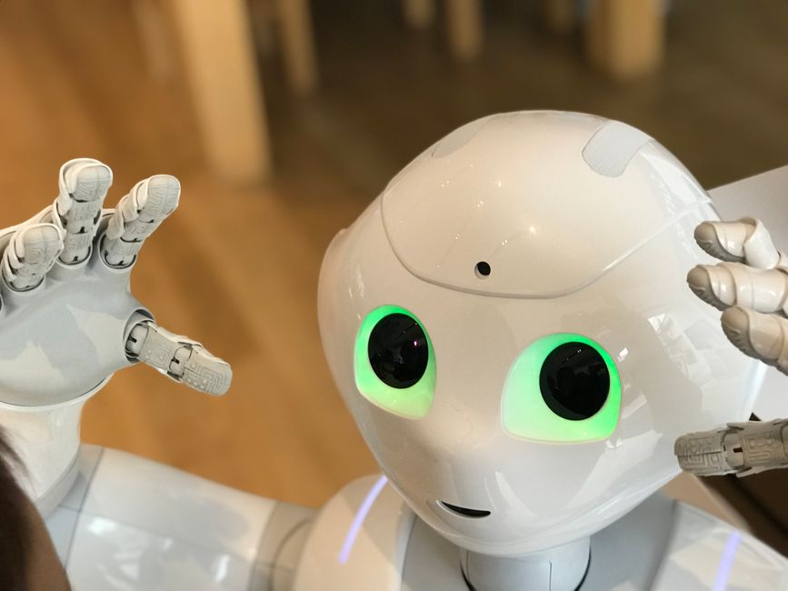

Robots are no longer just science fiction; they are rapidly becoming a part of our everyday lives, from helping out in factories to assisting in hospitals, and even delivering packages. As these incredible machines grow more sophisticated and intelligent, a crucial question arises: How do we ensure they behave ethically and safely? Building a robot is one thing, but building a *responsible* robot is an entirely different, and arguably more important, challenge. At MakerWorks, we believe that understanding robot ethics and safety is just as vital as mastering coding or circuitry, especially for the next generation of innovators in India.
What are Robot Ethics and Safety?
Imagine a robot designed to help elderly people at home. What if it accidentally trips someone? What if it collects personal data without consent? These are the kinds of questions that robot ethics and safety aim to answer.
- Robot Ethics refers to the moral principles and values that guide the design, development, deployment, and use of robots. It's about ensuring robots act in ways that are fair, just, and beneficial to humanity, avoiding harm and respecting human dignity.
- Robot Safety is about designing and operating robots in a way that prevents physical harm to humans, damage to property, or adverse environmental impact. It involves rigorous testing, fail-safe mechanisms, and clear operational guidelines.
While safety often focuses on preventing direct harm, ethics delves deeper into the societal, psychological, and long-term implications of robots. Both are two sides of the same coin: building trust and ensuring that technology serves humanity responsibly.
Why is This Important, Especially Now?
The pace of technological advancement is breathtaking. Robots are moving beyond controlled environments like factories and into our homes, schools, and public spaces. This means:
- Increased Human-Robot Interaction: More robots mean more chances for us to interact with them, making their predictable and safe behavior critical.
- Complex Decision-Making: Modern AI-powered robots can make autonomous decisions. We need to ensure these decisions align with human values.
- Societal Impact: Robots can affect jobs, privacy, social interactions, and even our understanding of intelligence. Ethical considerations help us navigate these changes positively.
- Your Role as Future Innovators: As students and enthusiasts, you are the ones who will be designing, programming, and deploying the robots of tomorrow. Understanding these principles now will empower you to build a better future.
“The real danger is not that robots will become too intelligent and take over the world. The real danger is that they will become too intelligent and we will give them too much power without proper ethical oversight.”
— Professor Kate Darling, MIT Media Lab
Key Pillars of Robot Ethics and Safety
Physical Safety: Preventing Harm
This is perhaps the most immediate concern. A robot arm in a factory needs to know when a human is too close. A delivery drone needs to avoid crashing. Safety protocols are built into hardware and software.
Consider this simple pseudocode example for a robot arm. It's not just about moving, but moving *safely*:
# Simple pseudocode for a robot arm safety check before movement
def move_robot_arm(target_position):
# Check for obstacles using proximity sensors
if sensor.detect_obstacle_in_path() == True:
print("SAFETY PROTOCOL: Obstacle detected! Halting movement.")
robot.stop_all_motion() # Emergency stop
robot.flash_warning_lights()
return False # Movement aborted
# Check if the robot is operating within its weight or temperature limits
if robot.is_overloaded() or robot.is_overheating():
print("SAFETY PROTOCOL: Robot overloaded or overheating! Halting movement.")
robot.stop_all_motion()
robot.send_alert_to_operator("System warning: Overload/Overheat")
return False # Movement aborted
else:
print(f"Moving arm to {target_position} with caution...")
robot.move_to(target_position)
return True # Movement successful
# Example usage:
if move_robot_arm("assembly_point_A"):
print("Arm movement to assembly_point_A successful.")
else:
print("Arm movement failed due to safety concerns.")
This code illustrates how a robot's programming can incorporate basic safety checks before executing an action, prioritizing safety over task completion.
Privacy and Data Security: Protecting Information
Many robots, especially those interacting with humans, collect vast amounts of data—images, sounds, location, and even biometric data. Ethical questions arise:
- Who owns this data?
- How is it stored and protected from cyber threats?
- Is it used for purposes other than what was intended?
For example, a home assistant robot might listen for commands, but should it record private conversations? We need robust data protection laws and transparent policies.
Bias and Fairness: Ensuring Impartiality
Robots and AI systems learn from data. If that data reflects existing human biases (e.g., historical discrimination), the robot might perpetuate or even amplify those biases. This can lead to unfair treatment in areas like:
- Facial recognition systems that misidentify certain demographics more often.
- Hiring algorithms that disadvantage specific groups.
- Robots in law enforcement making biased decisions.
It's crucial to ensure diverse and representative training data and to regularly audit AI systems for bias.
Accountability and Responsibility: Who is in Charge?
If an autonomous robot causes harm, who is to blame? Is it the programmer, the manufacturer, the operator, or the robot itself? This is a complex legal and ethical challenge. Clear frameworks are needed to assign responsibility, encouraging developers to build safer and more reliable systems.
Autonomy and Control: Balancing Independence with Oversight
How much independence should a robot have? While autonomy can make robots more efficient, complete autonomy without human oversight raises concerns. We need to define clear boundaries and "human-in-the-loop" mechanisms, ensuring humans can intervene or override robot decisions when necessary.
Environmental Impact: Sustainable Robotics
The lifecycle of a robot, from manufacturing to disposal, has an environmental footprint. Ethical considerations also extend to:
- Energy consumption during operation.
- Use of rare earth materials.
- Responsible recycling and disposal of electronic waste.
Designing for sustainability is an ethical imperative for all technological advancements.
Asimov's Laws of Robotics: A Starting Point
You might have heard of Isaac Asimov's Three Laws of Robotics, first introduced in his science fiction stories:
- A robot may not injure a human being or, through inaction, allow a human being to come to harm.
- A robot must obey the orders given to it by human beings except where such orders would conflict with the First Law.
- A robot must protect its own existence as long as such protection does not conflict with the First or Second Law.
While brilliant for inspiring thought, these laws are too simplistic for real-world scenarios. What if obeying an order (Law 2) indirectly causes harm (Law 1)? What if protecting itself (Law 3) requires damaging property? Real-world ethics are far more nuanced, requiring flexible frameworks rather than rigid rules.
Building a Responsible Robotics Future: Your Role
The future of robotics is not just about technological prowess; it's about ethical wisdom. As young learners and future innovators, you have a vital role to play:
- Think Critically: Always ask "should we?" in addition to "can we?" Consider the broader implications of your designs.
- Design for Transparency: Make robots' actions understandable and their decision-making processes as transparent as possible.
- Prioritize Human Well-being: Always put human safety, privacy, and dignity at the forefront of your designs.
- Embrace Interdisciplinary Learning: Robotics isn't just engineering. Learn about philosophy, sociology, law, and psychology to better understand the human context of your creations.
- Be a Responsible Citizen: Advocate for ethical guidelines and policies in your communities and beyond.
Conclusion
Robots are powerful tools that can transform our world for the better, but with great power comes great responsibility. By actively engaging with robot ethics and safety, we can ensure that these incredible machines contribute positively to society, enhance human lives, and operate within a framework of trust and respect. The journey of building intelligent machines is also a journey of understanding ourselves and our values.
Are you excited to be a part of this future? At MakerWorks, we encourage you to explore these fascinating questions. Let's build the future of robotics together—ethically, safely, and responsibly!